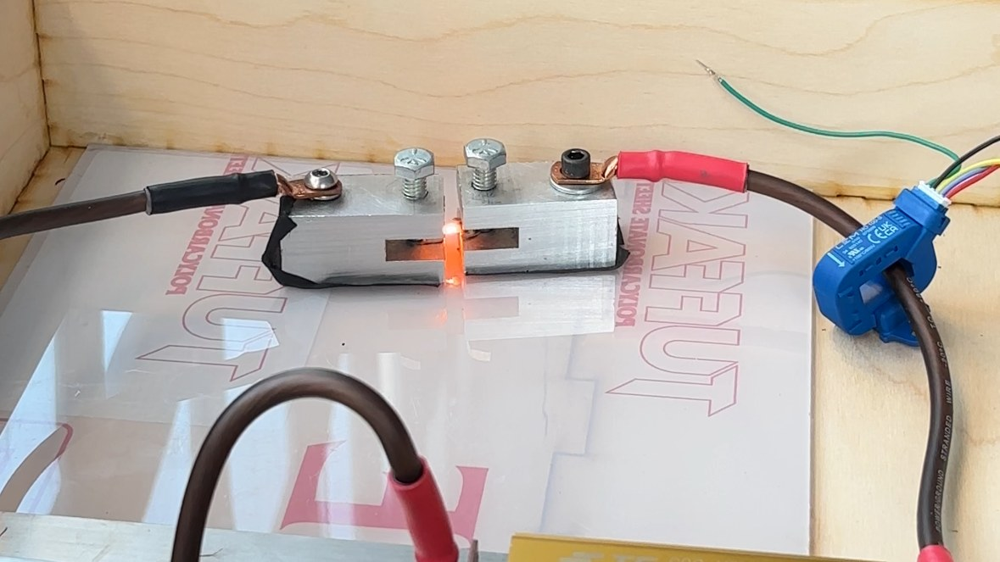
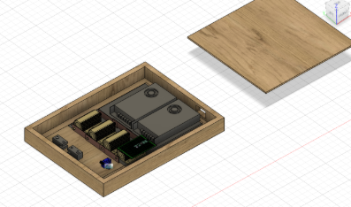
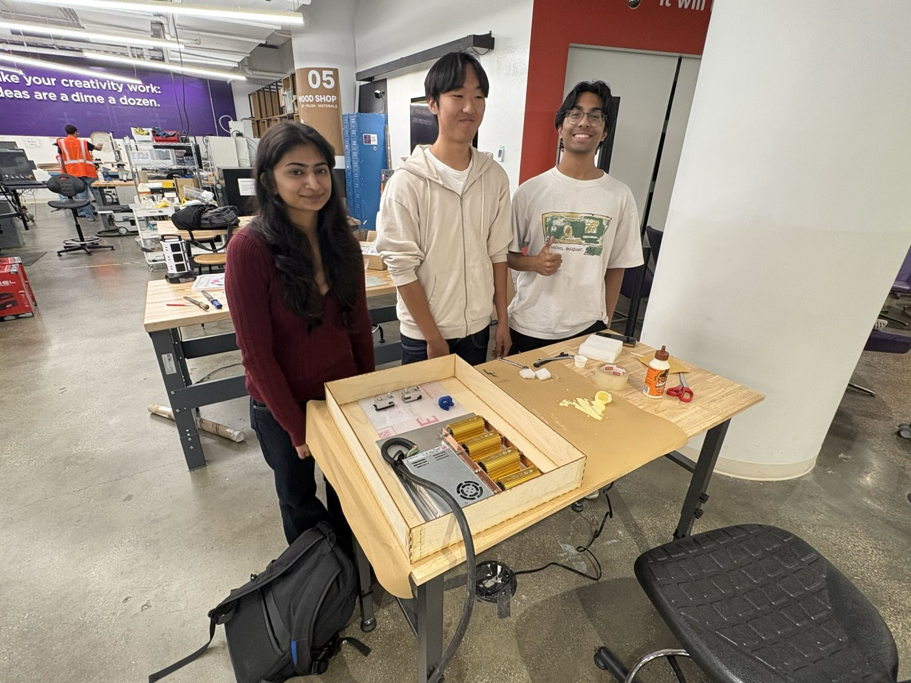
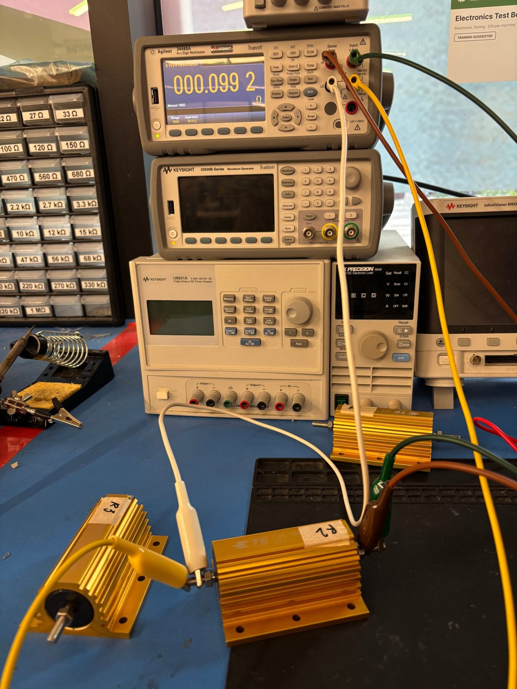
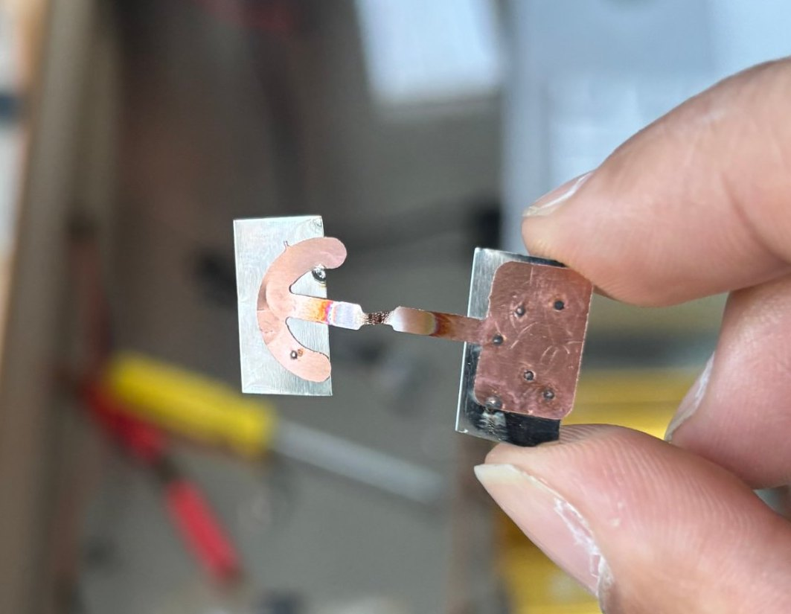

FSAE Fuse Rig In progress

Every cell in our accumulator has its own small copper fuse, and those fuses have to be rated before the car can pass FSAE tech inspection. I built this rig for NYU Motorsports to test them.
We used it to rate our cell fuses at 35A, which resolved a tech inspection failure. It also replaces last year's setup with a safe, enclosed, isolated environment that meets electrical isolation protocols.
Fusion 360 vs. the real thing


How it works
The rig is monitored by a Hall effect current sensor and a thermistor, both wired to a Teensy. The firmware captures current and temperature data through each fuse test, so every rating comes with a record of what actually happened.
Before testing, I checked the parts on the bench. The gold power resistors are 0.1 Ω, and a 4-wire measurement read one at 0.0992 Ω.

Making and breaking fuses
